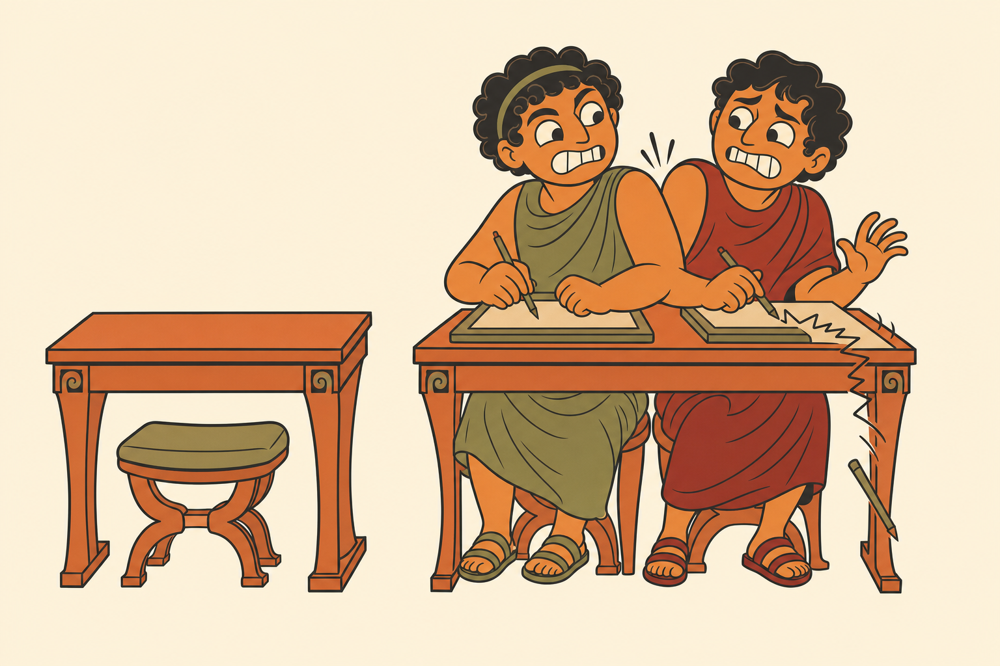
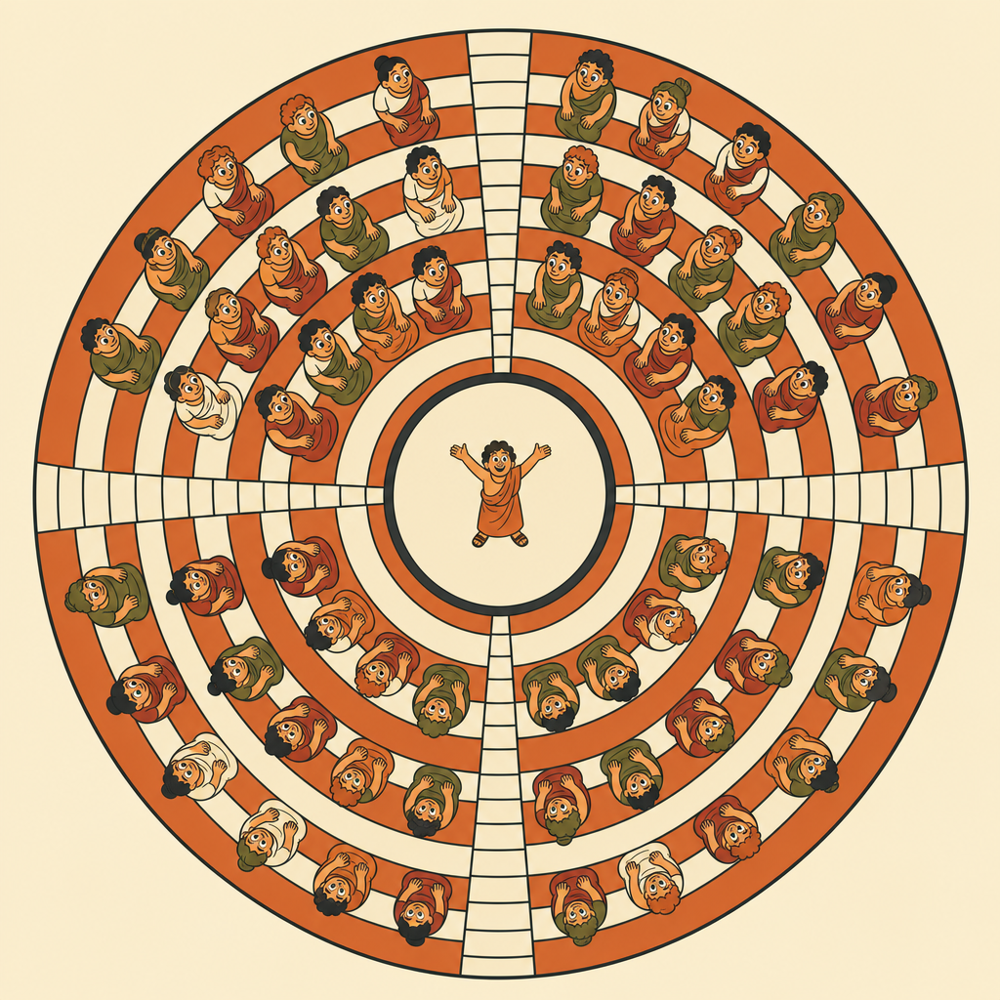
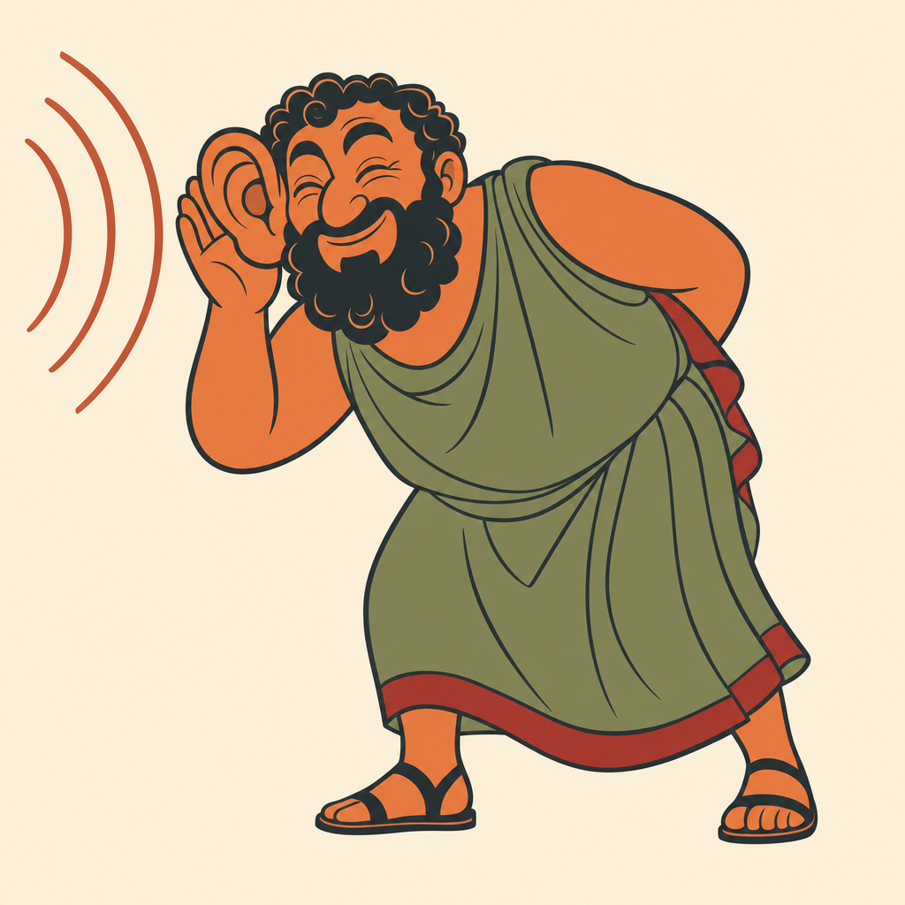
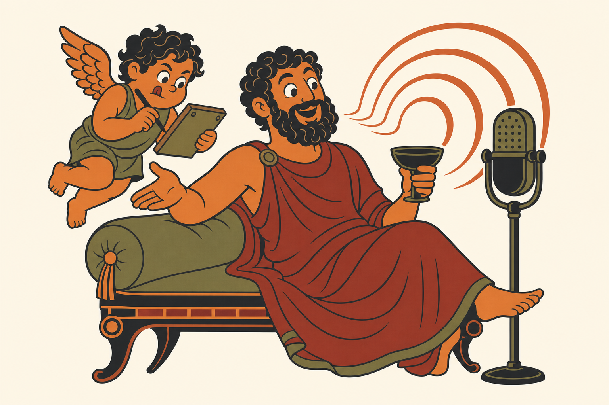

Words, while you're
still saying them.
Sonocles turns your Mac's microphone into a live stream of text — over WebSocket or server-sent events, word by word, about 180 milliseconds behind you.
What listens is up to you. A teleprompter that keeps your pace, a cue that fires on the word, live captions, a bot that answers to its own name. It streams; you decide.
Runs on the Neural Engine. Nothing leaves the machine.
or brew install --cask artisan-build/tap/sonocles

Real frames, about one word each. lag is how far behind the speaker that word arrived.
Why it exists
It started as crackly audio.
The speech-follow built into the teleprompter was fighting the encoder for CPU. The prompter kept up. The audio did not.
OBS wants every core it can get. So does a software encoder. Adding speech recognition to that same scrap meant dropped samples — and dropped samples on a take you cannot re-shoot are not a performance problem, they are a lost afternoon.
The Neural Engine, meanwhile, was sitting there doing absolutely nothing. It is a separate piece of silicon that no encoder is competing for. Moving the listening onto it did not make it faster so much as make it free: it stopped taking anything the recording needed.

The distinction
It is not a dictation app.
Dictation hands you a sentence once you have finished saying it. Perfectly good, when you are writing and nothing downstream is waiting. Useless when something is: a teleprompter that has to keep your pace, a cue that has to fire on a word, an editor that needs to know when you said it rather than when the transcript turned up.
| Dictation | Sonocles | |
|---|---|---|
| Gives you text | when you stop talking | while you are still talking |
| Aims at | a text field | a socket |
| Latency that matters | none, really | all of it |
| You are | writing | performing |
If dictation is what you want, use Sonari. It is genuinely good, it runs locally too, and it is made by a friend. We compared notes and concluded the use cases diverge: Sonari is built around the moment you stop speaking. This one is built around the moment you have not.
The measurement
Word by word, not
sentence by sentence.
One instrument, one sentence, one microphone. Apple's own Speech framework delivers that sentence in four bursts, 3.7 seconds apart. We ship the comparison so you can re-run it instead of believing us.
| Engine | Arrival gap | Behind live | Words per arrival |
|---|---|---|---|
| Apple SpeechAnalyzer | 3747 ms | 0 ms, four times | 8.8 |
| Parakeet 320 ms | 302 ms | 540 ms | 2.3 |
| Parakeet 160 ms | 206 ms | 180 ms | 1.5 |
# the whole comparison, on your machine, one target
make baseline
What it is for
Driving a prompter, mostly.
That is the honest answer. It exists because Pteroprompter needed it, and that is still what it is tuned for. But nothing about it is prompter-shaped — it streams words and timestamps at a socket, and what listens is your business.
- Speech-follow scrolling — the script keeps your pace instead of a fixed rate you have to chase.
- Cue firing — a control token triggers the instant you reach it, not a second and a half later.
- Editorial markers — every frame carries the audio time it was spoken, so markers land on the words.
- Live captioning — for a stream, a talk, or a room, with no cloud round trip.
- Anything with a socket — a lighting cue, a slide advance, a bot that answers to its own name.

What it does
Five things worth knowing.
It knows when you said it
Every frame carries the audio time it describes, not just the time it arrived. Arrival time drifts with the delivery schedule; audio time does not. That is the difference between a marker you can cut on and one you have to nudge.
It does not want your CPU
The models run on the Neural Engine, which your encoder is not competing for. Not a benchmark boast — it is the entire reason the thing was written. Recognition that costs you cores costs you takes.
It does not make things up
Thirty seconds of loud piano, peaking at -9 dBFS, produced zero words. That is a measurement, not a promise: a streaming model can emit a spurious token, and some will confidently transcribe music into sentences, which is a genuine hazard when the output drives a scroll. This one stayed quiet.
Nothing leaves your Mac
Models download once and run on device. The sockets bind to loopback only. There is no account, no key and no server — not as a policy, but because none was ever built.
Anything can drive it
SSE and WebSocket, both live at once. An HTTP control API to start and stop it, behind Basic auth if you want. And a CLI that reports its own latency, because the numbers up there should be yours to check.
Using it
Point something at a socket.
// both transports carry identical JSON, both live at once const es = new EventSource('http://127.0.0.1:7357/events') const ws = new WebSocket('ws://127.0.0.1:7358')
{ "type": "partial", "text": "the menu bar",
"audioStart": 40.28, "audioEnd": 40.8,
"lagMs": 200, "seq": 3 }
Use audioEnd, not ts. A missing lagMs means unmeasured — never zero. We are quite firm about this.
The name
Renowned for sound.
κλέος
The -cles in Sophocles and Pericles is the Greek -κλῆς, from kleos: renown. It comes down from a root meaning to hear — the same one that gives English the word loud. In Homer it is specifically the fame that survives because bards sing it and people hear it.
So the suffix does not merely mean famous. It means heard of. We would love to claim that was the plan.
Sono- is Latin, mind you. So the name is a seam between two languages, which is not scholarship so much as an accident we have decided to be pleased about. So is television. Nobody minds.

Anyway
Here is a Greek man
with a podcast.
He has been talking for some time. The small winged one has kept up with every word, roughly 180 milliseconds behind, and has not once had to ask him to repeat himself.
